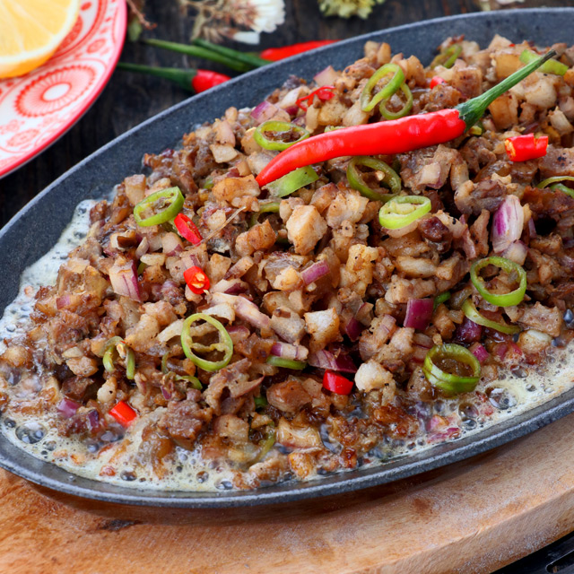

Home
Sisig

Description
Sisig is a flavorful Filipino dish of crispy pig parts, onions, chiles, and citrus. It's often made with pork jowl, ears, belly, and chicken liver. The dish is usually seasoned with calamansi, a small green citrus fruit that tastes like a cross between lime and orange.
As a Filipino, this is also one of my favorite Filipino dishes
Ingredients
Prep: 10 minutes, Cook: 20 minutes
Servings for 4 people:
- 1 lb. pork belly
- 3 pieces chicken liver
- 1 big red onion, finely chopped
- 1/2 lemon or 3-4 calamansi juice
- 1-2 chili peppers, minced or 1/4 tbsp chili flakes
- 1/2 tablespoon soy sauce
- 1/8 tsp ground black pepper
- salt and pepper to taste
Steps
- Season pork belly slices with salt and pepper. Let it marinate for at least 30 minutes.
- Grill pork belly and chicken liver until well done. Pork skin should be crispy.
- Once grilled, chop the pork belly and chicken liver into small fine pieces.
- In a bowl, combine the chopped meat, onions, lemon juice and chili pepper. Season with soy sauce and pepper.
- Warm it in a pan with a bit of oil if desired. Alternatively, heat a sizzling plate and add a some butter or margarine. Add the Sisig and serve while still sizzling hot.